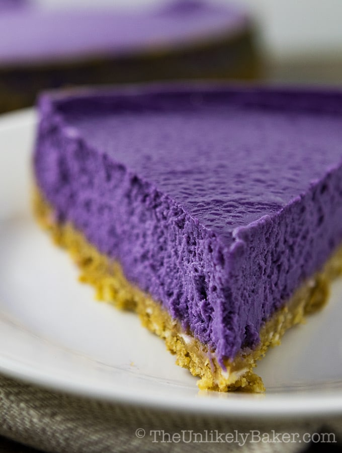

Ube Cheesecake

Description
This is the perfect sweet treat or dessert for a special occasion. The purple color gives it that wow-factor that will definitely turn heads.
Ingredients
Crust
- cooking spray
- 1 cup graham cracker crumbs
- 3 tablespoons unsalted butter, melted
- 1 tablespoon granulated sugar
- 1/8 teasoon kosher salt
Filling
- 3 (8 ounce) packages cream cheese, softened
- ½ cup granulated sugar
- 1 ¼ cups ube jam (Ube Halaya)
- ½ cup heavy whipping cream
- 3 large eggs
- 2 teaspoons ube extract
- ½ teaspoon vanilla extract
- ¼ teaspoon kosher salt
Ube Ganache
- ½ cup white chocolate chips
- ¼ cup heavy whipping cream
- ¼ teaspoon ube extract